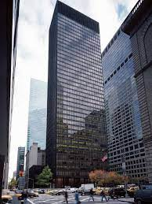

146. Seagram Building. New York City, US. Ludwig Miles van der Rohe and Philp Johnson. 1954-1958 CE Steel frame with glass curtain wall and bronze.
- Function
- 38-story corporate headquarters of the Seagram Liquor Company
- Form
- Bronze veneer gives the skyscraper a monolithic look; bronze is maintained yearly to keep the same color
- Set back from Park Avenue on a wide plaza balanced by reflecting pools
- Interplay of vertical and horizontal accents
- Mullions stress the verticality of the internal frame
- Context
- Minimalist architecture
- Monolith style expresses corporate power
- Mies’s saying of “Less is more” can be seen in this building with its great simplicity, geometry of design, and elegance of construction
- Mies also said, :God is in the details;” truthful buildings express their structure, not hide it
- Steel and glass skyscrapers and curtain wall construction became the model after WWII
- A triumph of the International Style of architecture